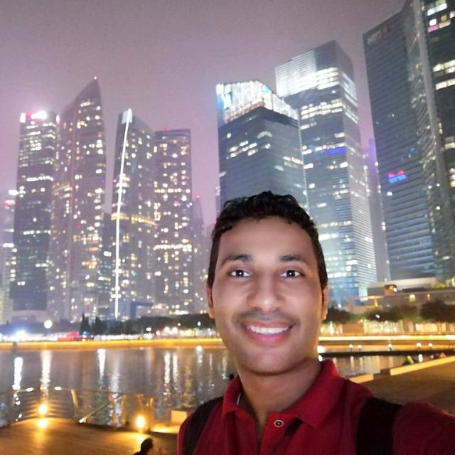
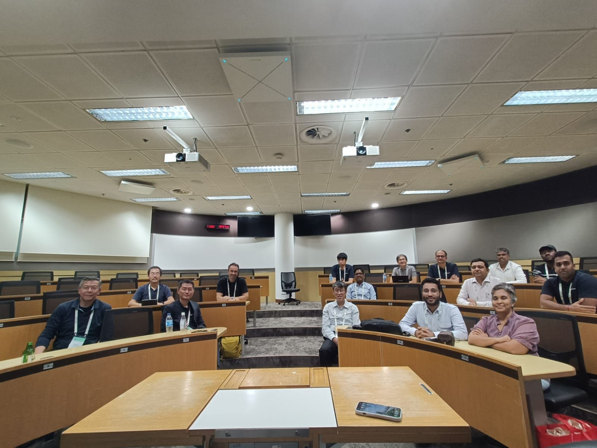
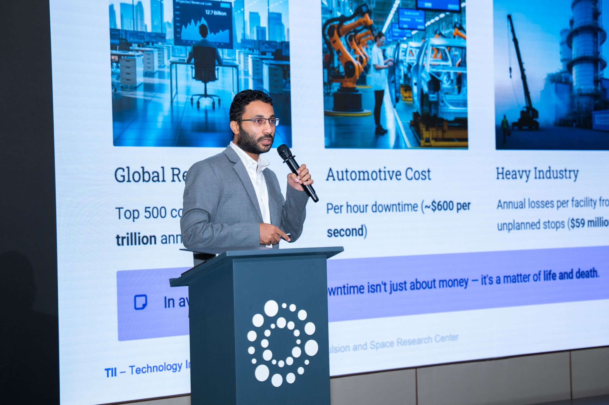
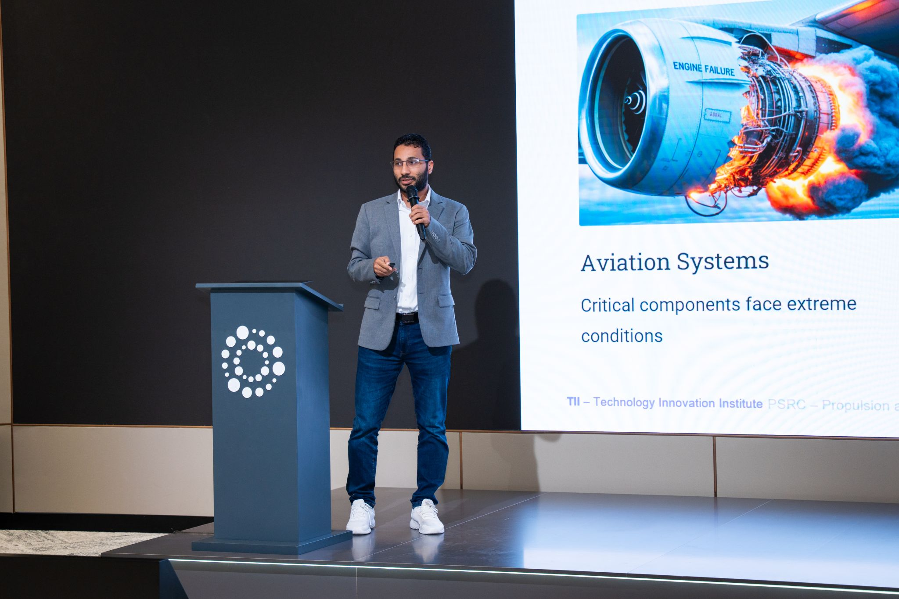
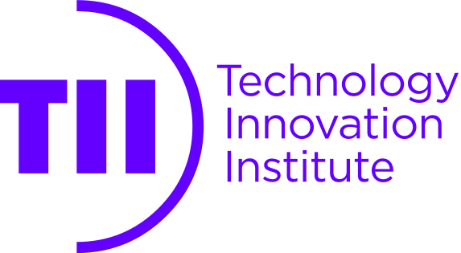
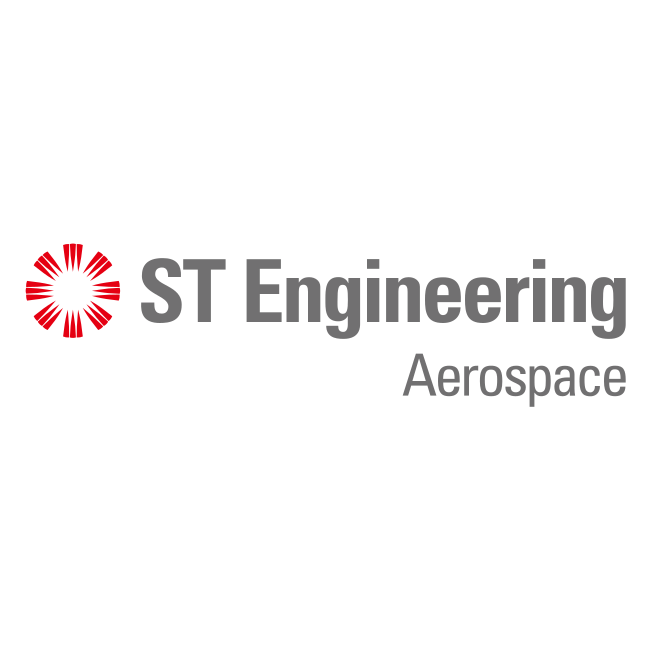
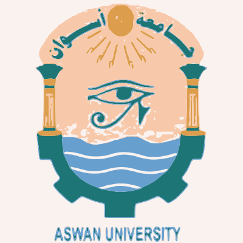

Welcome
AI Research Lead | Agentic & Industrial AI for Complex Engineering Systems
Senior Researcher at the Technology Innovation Institute (TII), UAE, and Adjunct Researcher at A*STAR, Singapore. Leading AI-driven solutions for complex engineering systems — from agentic AI and LLM intelligence to time-series analysis. 30+ publications in ICML, KDD, IJCAI, IEEE TPAMI, TNNLS, and TKDE. PhD from NTU (QS Top 12).
"Advancing AI to solve real-world challenges in time series and beyond."

Research interests & technical expertise
Focused on challenges including domain adaptation, transfer learning, self-supervised learning, and privacy-preserving AI for scenarios with scarce labeled data and distribution shifts. Secured competitive research funding as Principal Investigator, including grants totaling over $450K.
Best Paper Award, CCIA 2025
KDD 2025 paper accepted
Promoted to Senior Researcher at TII (Oct 2025)
Recent updates and achievements



Academic background and qualifications
Nanyang Technological University (NTU), Singapore
GPA: 4.88 / 5.0. Thesis: Towards Realistic Data-driven Predictive Maintenance.
SINGA ScholarshipAswan University, Egypt
GPA: 3.62 / 4.0.
Best Master's Thesis AwardAswan University, Egypt
GPA: 3.88 / 4.0.
First Class HonoursCareer timeline and key accomplishments

TII Propulsion & Space, Abu Dhabi, UAETII Propulsion & Space, Abu Dhabi, UAE
CFAR, A*STAR, Singapore
I2R, A*STAR / NTU, Singapore

ST Engineering Aerospace, Singapore
Aswan University, EgyptAswan University, Egypt
Selected projects and funded research
Co-PI | USD 300K | TII, 2025–2026
Anomaly detection, fault diagnostics, and remaining useful life estimation using multimodal AI and LLM integration for aerospace engine health monitoring.
PI | TII, 2025–2026
Physics-informed deep learning for infrared radiation prediction in propulsion systems, enabling advanced thermal analysis and engine performance optimization.
PI | SGD 150K | A*STAR CDF, 2024–2025
Privacy-preserving federated transfer learning with limited labeled data for time series applications. Received A*STAR Career Development Award funding.
Member | AI Singapore, 2022–2025
Continual test-time adaptation and self-supervised learning for time series. Key outputs: TSLANet (ICML 2024), EverAdapt (MSSP 2025), KDD 2025.
MAPU_SFDA_TSMember | A*STAR Programmatic Fund, 2021–2024
Self-supervised and label-efficient representation learning for time series. Key outputs: TS-TCC (IJCAI 2021, TPAMI 2023), AdaTime benchmark (TKDD).
SLARDAMember | IAPF, 2019–2021
Explainable AI for multi-modal sensing in engine health monitoring, integrating physics-informed models with deep learning for interpretable fault detection.
Attention-Seq2Seq-RUL30+ publications in top-tier venues — Full list on Google Scholar
Boosting Time-Series Domain Adaptation via A Time-Frequency Consensus Framework
NewDomain Generalization via Selective Consistency Regularization for Time Series Classification
Robust Domain-Free Domain Generalization with Class-Aware Alignment
Adversarial Transfer Learning for Machine Remaining Useful Life Prediction
Finalist Paper AwardSecure Transfer Learning for Machine Fault Diagnosis Under Different Operating Conditions
Evidentially Calibrated Source-Free Time-Series Domain Adaptation with Temporal Imputation
NewEvidential Domain Adaptation for Remaining Useful Life Prediction with Incomplete Degradation
From Inconsistency to Unity: Benchmarking Deep Learning-Based Unsupervised Domain Adaptation for RUL
A Virtual-Label-Based Hierarchical Domain Adaptation Method for Time-Series Classification
Overcoming Negative Transfer by Online Selection: Distant Domain Adaptation for Fault Diagnosis
Self-supervised Contrastive Representation Learning for Semi-supervised Time-Series Classification
ADAST: Attentive Cross-domain EEG-based Sleep Staging Framework with Iterative Self-Training
Conditional Contrastive Domain Generalization for Fault Diagnosis
Attention-Based Sequence to Sequence Model for Remaining Useful Life Prediction
Contrastive Adversarial Knowledge Distillation for Deep Remote Sensing Image Hashing
Contrastive Adversarial Domain Adaptation for Machine Remaining Useful Life Prediction
Adversarial Multiple-Target Domain Adaptation for Fault Classification
Mentorship, teaching, and academic community engagement
Domain Adaptation for Breast Cancer Detection
Adaptation for Fault Diagnosis
LLMs for Code Authorship
Source-Free Domain Adaptation
Continual Test-Time Adaptation
Continual DA for Fault Diagnosis
Robust Uncertainty Quantification for Time Series
PINNs for Nanophotonics
PC Member
Journal Reviewer
Research highlights and media coverage
A*STAR Research Highlights | May 2022
A*STAR researchers developed a computational platform that forecasts when machines will reach the end of their operational life, featuring Mohamed Ragab's CADA algorithm for transfer learning-based predictive maintenance.
A*STAR Research Portal
Featured researcher profile on A*STAR's official research portal, highlighting work on deep learning for condition monitoring and predictive maintenance.
A*STAR CFAR | 2023
Awarded SGD 150K seed funding for the project "Label-Efficient and Resilient Federated Learning Approach for Time Series Applications" in manufacturing, healthcare, and IoT.
NTU Singapore | 2021
Time-Series Representation Learning via Temporal and Contextual Contrasting (IJCAI 2021), featured in NTU's official digital research repository.
Recognitions and achievements
October 2025
January 2024 — Federated Learning for Time Series Applications
July 2020
August 2018
August 2017
July 2014